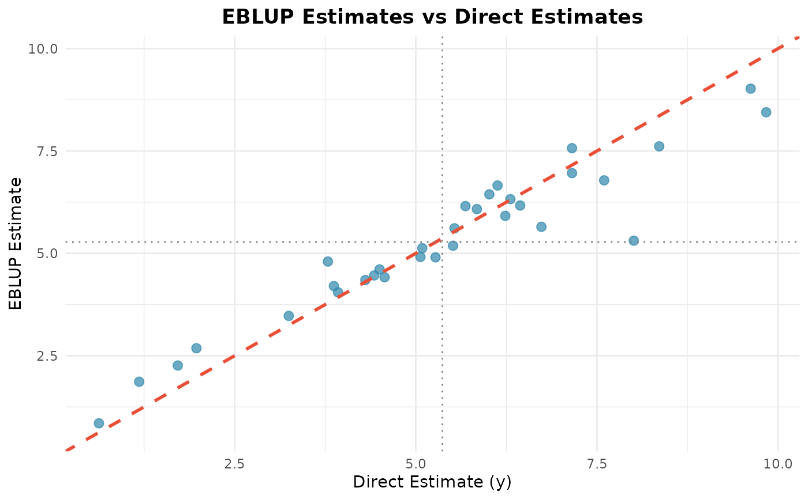
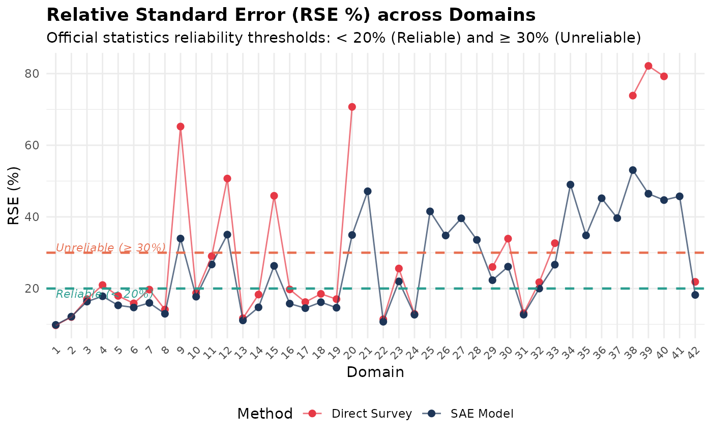
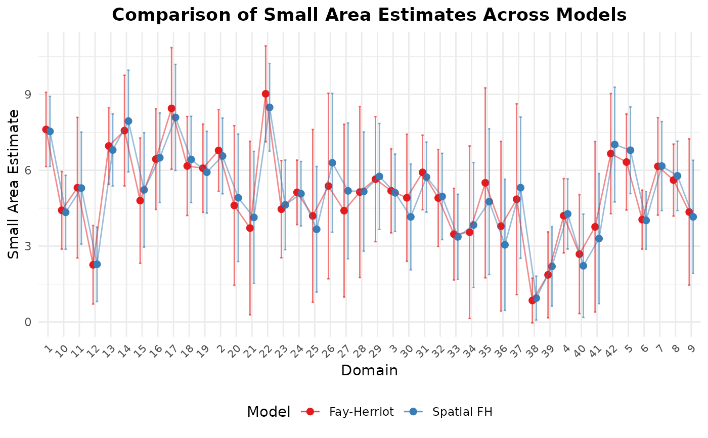

Creates diagnostic and comparison plots for Small Area Estimation (SAE)
models fitted with fastsae. This extends the generic
autoplot from ggplot2.
Arguments
- object
An object of class
fastsae, or a (named) list offastsaeobjects.- type
Type of plot to create.
For a single
fastsaeobject:"comparison","ribbon","mse","estimates","scatter","rse", or"map"; for a fit withjax_engine()also"trace"and"rank", the MCMC convergence plots (see Details).For a list of
fastsaeobjects:"comparison","mse","scatter", or"map".
- ...
Additional arguments passed to internal plotting helpers (e.g.
title) or to ggplot2 layers. For"trace"and"rank":pars, the parameters to show (names infit$mcmc_diagnostics$parameter, such as"sigma2_u", a coefficient name or"hb[5]"for row 5 ofdf_hb), and for"rank"bins(default 20).
Details
MCMC convergence plots. "trace" draws each chain's sampled values against
the iteration; "rank" the rank plot of Vehtari et al. (2021): the draws of all chains
are ranked together and each chain's ranks are counted in bins bins. If the chains
sample the same distribution each chain's counts lie near the dashed line (an equal share);
a chain stuck in one region has too many low or high ranks. The facet labels give the
rank-normalized R-hat and bulk ESS. By default the plots show the variance and other
hyperparameters, up to eight coefficients and the area or domain with the largest R-hat;
all R-hats and ESSs are in fit$mcmc_diagnostics. The numbers, not the plots, are the
check (R-hat < 1.01 and ESS > 100 per chain); the plots show why a check fails.
References
Vehtari, A., Gelman, A., Simpson, D., Carpenter, B., & Bürkner, P.-C. (2021). Rank-normalization, folding, and localization: An improved R-hat for assessing convergence of MCMC. Bayesian Analysis, 16(2), 667-718.
Examples
library(fastsae)
# Single model plot
fit_fh <- eblup_fh(y ~ x1 + x2 + x3, data = mys, vardir = "vardir")
#>
#> ── Fast Small Area Estimation (fastsae) ────────────────────────────────────────
#> Call:
#> eblup_fh(formula = y ~ x1 + x2 + x3, vardir = "vardir", data = mys)
#>
#> ✔ Convergence: Yes (in 6 iterations)
#> Model: Fay-Herriot (Area-level)
#> Method: REML
#> Random effect variance (sigma2_u): 2.608103
#>
#> Fixed Effects Coefficients:
#> beta std.error zvalue pvalue
#> (Intercept) 3.1077510 0.7697687 4.0372527 0.0001
#> x1 -0.0019323 0.0098886 -0.1954019 0.8451
#> x2 0.0555184 0.0614129 0.9040187 0.3660
#> x3 0.0335344 0.0580013 0.5781663 0.5632
#>
#> EBLUP Estimates (First 6 domains):
#> domain y eblup vardir random_effect mse rse
#> 1 1 8.359527 7.612738 0.6618838 2.94266461 0.5616180 9.844182
#> 2 2 7.599650 6.782316 0.8374691 2.54539588 0.6784873 12.144869
#> 3 3 5.514137 5.187060 0.8822257 0.96692722 0.7190378 16.347620
#> 4 4 3.869326 4.201545 0.6581716 -1.31646412 0.5619314 17.841554
#> 5 5 6.305063 6.323679 1.2788021 -0.03796677 0.9370273 15.307573
#> 6 6 3.926807 4.048590 0.3878004 -0.81904048 0.3548310 14.713194
#> ... and 36 more rows.
#>
autoplot(fit_fh, type = "estimates")

autoplot(fit_fh, type = "rse")
#> Warning: Removed 10 rows containing missing values or values outside the scale range
#> (`geom_point()`).

# Compare two models
fit_sfh <- eblup_sfh(y ~ x1 + x2 + x3, data = mys, vardir = "vardir", W = mys_proxmat)
#>
#> ── Fast Small Area Estimation (fastsae) ────────────────────────────────────────
#> Call:
#> eblup_sfh(formula = y ~ x1 + x2 + x3, vardir = "vardir", data = mys, W =
#> mys_proxmat)
#>
#> ✔ Convergence: Yes (in 18 iterations)
#> Model: Spatial Fay-Herriot (Area-level SAR)
#> Method: REML
#> Random effect variance (sigma2_u): 0.989226
#> Spatial autocorrelation (rho): -1
#>
#> Fixed Effects Coefficients:
#> beta std.error zvalue pvalue
#> (Intercept) 3.2570714 0.6265689 5.1982651 0.0000
#> x1 -0.0020340 0.0080925 -0.2513457 0.8015
#> x2 0.0568516 0.0525488 1.0818827 0.2793
#> x3 0.0252179 0.0497283 0.5071123 0.6121
#>
#> EBLUP Estimates (First 6 domains):
#> domain y vardir eblup random_effect mse rse
#> 1 1 8.359527 0.6618838 7.535193 2.8128506 0.4999462 9.383551
#> 2 2 7.599650 0.8374691 6.564385 2.2380505 0.5831410 11.633028
#> 3 3 5.514137 0.8822257 5.109460 0.7620572 0.6095214 15.279864
#> 4 4 3.869326 0.6581716 4.273391 -1.2736332 0.5018535 16.577378
#> 5 5 6.305063 1.2788021 6.791422 0.4746535 0.7644430 12.873951
#> 6 6 3.926807 0.3878004 4.016701 -0.9459807 0.3398919 14.514460
#> ... and 36 more rows.
#>
autoplot(list("Fay-Herriot" = fit_fh, "Spatial FH" = fit_sfh), type = "comparison")
